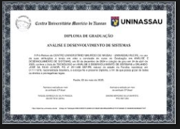

ORLANDO JUNIOR
Arquiteto soluções digitais seguras e escaláveis para desafios reais de negócio e governança.
17+ anos em tecnologia, unindo experiência em infraestrutura de TI com atuação atual em IA, Compliance, LGPD e desenvolvimento web.
Sobre Mim
Orlando Junior
Pai, profissional de tecnologia e aprendiz contínuo, construindo soluções com propósito, disciplina e impacto real.
Minha História
Sou pai e apaixonado por aprender continuamente. No dia a dia, gosto de estudar, ler e transformar conhecimento em prática, sempre buscando evolução pessoal e profissional com consistência.
Estilo de Vida e Valores
Também gosto de conhecer lugares novos e experimentar comidas diferentes. Essas experiências ampliam minha visão de mundo, alimentam minha criatividade e fortalecem minha capacidade de resolver problemas com empatia.
Como Isso Se Reflete no Meu Trabalho
Levo essa curiosidade e disciplina para minha atuação em tecnologia, unindo visão estratégica e execução prática para entregar soluções úteis, seguras e escaláveis para pessoas e organizações.
Graduacao
Formação académica concluída que sustenta minha atuação técnica em desenvolvimento de sistemas, infraestrutura e operações de TI.
Análise e Desenvolvimento de Sistemas
Centro Universitário Maurício de Nassau - UNINASSAU
Período: 03/2023 até 12/2024
Formação superior que me proporcionou uma base sólida no ciclo de vida do desenvolvimento de software, com ênfase em tecnologias web. A grade curricular cobriu desde a análise de requisitos e modelagem de dados até o desenvolvimento back-end e front-end, preparando-me para criar soluções digitais completas e eficientes.

✓ Curso concluído com sucesso
Pos-graduacao
Especializacao em andamento com foco em cloud computing e inteligencia artificial.
Cloud Computing com Inteligencia Artificial - XP Educacao (em andamento)
Pos-graduando com foco em arquitetura cloud, automacao e aplicacoes de IA. Um modulo ja concluido possui certificacao com validacao publica.
Codigo de validacao do modulo concluido: 02deea7d90940c7bf643c3a496e875c3.
Validar modulo concluidoCertificado Completo (25/03/2024 a 19/12/2024)
Consolidacao de estudos com foco em habilidades praticas para dados e desenvolvimento: Data Science (128h), SQL (34h), Programacao (8h), Imersao Data Science (5h) e Inovacao e Gestao (20h).
Ver certificado completoCertificacoes de Nivel Internacional
Certificacoes internacionais com validacao publica, emitidas por Amazon Web Services. Nota: Combinam formacao pratica em desenvolvimento de habilidades (AWS re/Start) com certificacao oficial validada (AWS Certified Cloud Practitioner - Nivel Fundamental), demonstrando fluencia em nuvem AWS.
 Amazon Web Services Training & Certification
Amazon Web Services Training & Certification
AWS re/Start Graduate
Programa de Desenvolvimento de Habilidades: Conclusao de rigorosos cursos de Fundamentos de TI, AWS Cloud e treinamento profissional. O programa inclui aprendizado baseado em cenarios reais do mundo, laboratorios praticos e disciplinas, apoiado por mentores profissionais e treinadores credenciados.
Ver credencial no Credly Amazon Web Services Training & Certification
Amazon Web Services Training & Certification
AWS Certified Cloud Practitioner
Nível Fundamental: Entendimento fundamental dos serviços de TI e seus usos na AWS Cloud. Demonstra fluencia em nuvem e conhecimentos fundamentais de AWS, com capacidade de identificar en serviços essenciais necessarios para configurar projetos focados em AWS.
Ver credencial no CredlyHabilidades Técnicas
Competências técnicas consolidadas através de experiência profissional, certificações internacionais e formações contínuas em cloud computing, dados e desenvolvimento.
Cloud Computing & AWS
Cloud Computing
AWS
Amazon Web Services
Azure
Segurança em Cloud
Arquitetura de Software
Desenvolvimento & Dados
Python
SQL
NoSQL
Pandas
NumPy
ETL
Airflow
Pipeline de Dados
Engenharia de Dados
Jupyter Notebook
PostgreSQL
SQLite
Modelagem de Dados
Arquitetura de Banco de Dados
Web & Desenvolvimento
JavaScript
HTML
CSS
Web Responsiva
Programação Orientada a Objetos
Análise de Dados
Visualização de Dados
Integração de APIs
Infraestrutura & DevOps
Linux
Windows
PowerShell
Bash
CLI
Git
GitHub
Administração de Servidores
Virtualização
Gerenciamento de Configuração
VS Code
PyCharm
Governança & Negócio
Compliance
LGPD
Gestão de Projetos de TI
Análise de Sistemas
Levantamento de Requisitos
Arquitetura Orientada a Serviços (SOA)
Experiência Profissional
Carreira consolidada com 17+ anos em tecnologia, infraestrutura e gestão, atualmente migrando para especialização em cloud computing e dados.
Diretor do Departamento de Informática
Prefeitura Municipal de São Sebastião de Lagoa de Roça, PB
Gerenciamento da infraestrutura de TI, supervisão de aquisições, gestão de contratos,
implementação de políticas de segurança, LGPD e desenvolvimento de portais institucionais.
Administrador de Redes
Prefeitura Municipal de São Sebastião de Lagoa de Roça, PB
Administração de infraestrutura de redes, intranet, backbone entre secretarias,
monitoramento de hardwares e sistemas.
Técnico Líder
Armazém Paraíba
Gerenciamento de infraestrutura, supervisão de equipe técnica, suporte a 27 filiais,
implementação de ERP e banco de dados.
Técnico Líder - Field Service Management
Probank | ViaTelecom
Coordenação de equipe, treinamento e desenvolvimento de Field Service.
Técnico Nível 2
Probank | ViaTelecom
Field Service onsite, instalação de terminais POS, redes Cisco, equipamentos de telecomunicação.
Portfolio
Projetos publicados em producao e repositorios publicos no GitHub demonstrando aplicacao pratica de tecnologia em contextos reais.
Portal da Transparencia - Lagoa de Roca/PB
Plataforma para acesso a informacoes publicas e acompanhamento da gestao municipal.
Transparencia
Dados Publicos
Web
Transparencia da Camara - Lagoa de Roca/PB
Portal institucional com dados e conteudos para acompanhamento legislativo.
Legislativo
Portal Web
UX Publica
IPSM - Lagoa de Roca/PB
Site institucional voltado a servicos e informacoes para os segurados do instituto.
Institucional
Servicos
Conteudo
Engenharia de Dados - Pipeline de Dados com Python
Projeto focado em processamento de dados combinando Python, Pandas e orientacao a objetos em ambiente Jupyter.
Python
Pandas
Jupyter
Trilha Data Science - Pandas e Analise de Dados
Estudos praticos em Data Science utilizando Pandas, visualizacao de dados e tecnicas de analise em Python.
Data Science
Pandas
Analise
BibliotecaDev - Biblioteca de Recursos Profissionais
Repositorio colaborativo com livros e materiais essenciais para desenvolvimento profissional (20 stars no GitHub).
GitHub
Open Source
Community
Presenca Online
Me acompanhe nos canais abaixo para ver codigo, certificacoes, formacoes e atualizacoes da minha jornada.
GitHub
Repositorios, praticas e projetos em desenvolvimento.
Acessar perfilExperiencias, conexoes profissionais e atualizacoes de carreira.
Ver perfilAlura
Trilhas de estudo, cursos concluidos e evolucao tecnica.
Consultar cursos
Credly
Badges publicos com destaque para AWS re/Start e AWS Certified Cloud Practitioner.
Ver badges